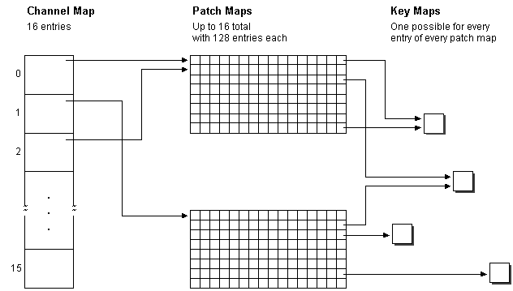

title: The MIDI Mapper Architecture description: The MIDI Mapper Architecture ms.assetid: d08d1442-bf9f-46bb-bd44-f512ff4b6bd5 keywords:
The MIDI Mapper uses a MIDI setup map to determine how to translate and redirect the messages it receives. A MIDI setup map consists of the following types of maps.
The following illustration shows the roles of channel, patch, and key maps in a MIDI setup map.

Â
Â